Resident Destination Choice
Intro
This document summarizes the destination choice (DC) models estimated using travel survey and other data from the Triangle region. These models will become a part of the G2 hybrid travel demand model. Within the hybrid framework, destination choice is modeled in the aggregate for each of several trip purposes. Vehicle sufficiency and income are used to further refine the market segments.
General modeling aspects:
- Destinations are predicted at the zone (TAZ) level.
- Based on an analysis of the region, the zones were logically grouped into the following clusters:

- Nested Logit (NL) models were estimated for the home-based trip purposes while multinomial logit (MNL) models were estimated for non-home-based trip purposes. NL models were attempted for the latter set of purposes but did not provide justifiably better models.
- All models were estimated using Larch (Newman, 2021).
A note on model fit
While the fit of a discrete choice model is popularly assessed through the rho-squared and asymptotic rho-squared statistics, they are tricky to interpret in the context of destination choice. The presence of the size term complicates the calculation of the base log-likelihood, LL(0), which forms the reference for the rho-squared calculation. LL(0) is based on the assumption that all alternatives are equally likely. However, the zone alternatives in destination choice are not truly elemental alternatives but are themselves rather the collection of individual employment (say) options available within that zone. The size variable with its default coefficient of 1 must therefore be included when determining LL(0). This provides an automatic “improvement” of LL(0) over the case where the size variable is not included. Consequently, rho-squared falls. This should not be taken as automatic evidence of a poorer model. The selection of the model should still (as always) be based on the reasonableness of its coefficients, their statistical significance, and model sensitivities.
Distance terms
Destination choice models in practice sometimes include distance and its mathematical transforms as part of each zone’s utility equation. While these terms might improve statistical fit, they can cause unintended sensitivities that are counter-intuitive. These effects stem from the non-monotonic shape of the combined distance effect, as illustrated by the example below. Taken from a real-world model, this graph clearly shows how farther zones are less attractive only up to a certain threshold. Beyond that distance, the effect is reversed so that the farthest zones become more attractive (all else being the same).

Such models only remain valid for the range of distances observed in the survey data used for model estimation. Scenarios involving longer distances will produce unintuitive model sensitivities.
Another concern with distance variables is their static nature. Since they are not responsive to congestion, they cannot capture destination choice sensitivity to this key real-world and policy-relevant aspect.
In addition, distance is highly correlated with travel times so that the inclusion of both variables often causes difficulties in model estimation as the algorithm struggles to uniquely split the effects between them.
For the above reasons, the destination choice models for TRM rely on travel times, logsums by mode type, and other skims rather than distance-based variables.
Home-Based Trips
The TRM region features eight home-based trip purposes as revealed by an analysis of the survey. Each purpose’s destination choice model is based on nested logit with zone clusters as nests. Each cluster has its constituent zones under it:

Various model structures and specifications were tried:
- FLAT: No nesting
- SEQUENTIAL CHOICE OF CLUSTER + WITHIN-CLUSTER ZONE
- Sub-model approach 1: Separate sub-model for each cluster
- Sub-model approach 2: Common model across all clusters (with appropriate availabilities)
- NESTED (simultaneous choice of cluster and zone)
The nested specification outperformed all other approaches.
Utility Specification
The utility specification for the DC models consisted of the following set of variables. Not all these variables are present in every specification since variables are retained depending on the significance of their estimated coefficients or owing to strong apriori assumptions.
Size term
This is the natural logarithm of the attractions at a destination zone, which itself is a linear combination of employment variables and their coefficients. These coefficients are simultaneously estimated with other parameters. Since it is required that these coefficients be positive, the utility formulation specifies coefficients that are then exponentiated. Successful estimation requires that one of these attraction variable coefficients is fixed. The estimation also provides a coefficient for the size variable, which theoretically should be between 0 and 1.
Mode Choice Logsums
Using mode choice root logsums typically presents a problem in destination choice. The root logsum value is dominated by the auto nest which washes out effects from non-dominant modes. For example, drastically improving the transit accessibility to a particular zone will not affect the probability of choosing that zone if the transit logsums are dwarfed by the auto logsums. To circumvent this issue, separate auto, transit, and non-household auto logsums from the respective nests are used in the TRM specifications. The logsums are segmented by vehicle sufficiency market segments for added explanatory power. Work trip logsums are further distinguished by high- and low-income segments. Finally, note that there is no auto logsum component for the zero-vehicle households market segment.
Others
- 4D measures: Several 4D measures such as transit accessibility, hospital accessibility, walk accessibility, employment densities are considered.
- Time Coefficient(s): The auto times corresponding to the latest model skims are attached depending upon the time of day the respondent made the trip. A time coefficient is estimated in each specification.
- Intra-Cluster effects: Intra-Cluster coefficients are estimated if the home and the chosen zone are within the same cluster (nest).
- Intra-Zonal effect: A coefficient is estimated to boost the utility of choosing the same zone as the origin.
- Cluster Nest coefficients: A nest coefficient for each of the 12 clusters is estimated.
- Cluster ASCs: Likewise, ASCs are estimated for each cluster.
The rich utility specification allows the model to capture the decision-making process of choosing destination zones and capturing cluster-to-cluster flows.
General Estimation Observations
ASCs were estimated for all but one of the clusters, but only the significant ASCs were kept for each model purpose. The ASCs with poor significance generally had values close to zero. Further, these ASCs are very small in magnitude, confirming that the model’s explanatory power is derived from other variables with the ability to capture location choice behavior.
Intrazonal effects were strong for a few of the purposes, but intra-cluster effects were very strong implying that there is a tendency to choose locations that belong in the same cluster as the home zone.
Mode choice logsums for the auto model (and for vehicle sufficient segments) caused unrealistic signs as well as much poorer model fit. This can be explained by the fact that these logsums are primarily driven by auto skims, which are already a part of the utility equation. Hence most specifications do not have an auto logsum.
W_HB_W
W_HB_W corresponds to trips that are part of a work tour, have one end at home, and the other end at work. This segment captures trips that directly connect the home and work locations and translates to the HBW trip purpose in traditional models. Destination choice in this context relates to the long-term decision of work location, to which work trips are made with regularity.
Estimated coefficients and t statistics
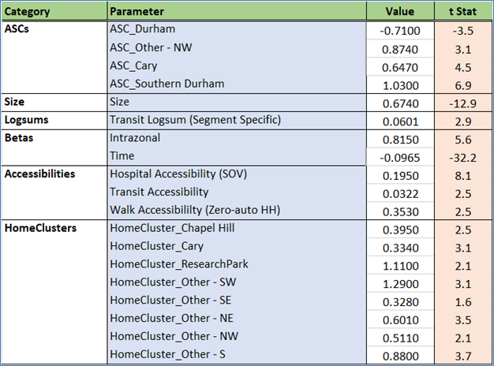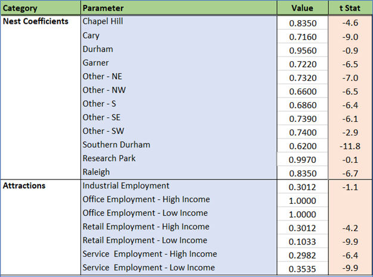
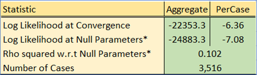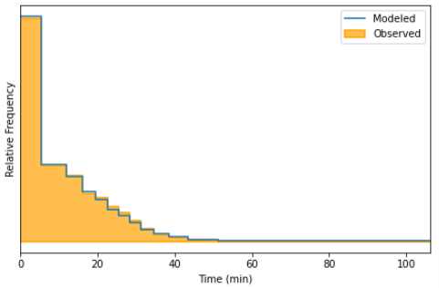
ASCs were estimated for all but one of the clusters. Several had values close to zero with poor significance and were dropped. The ASCs are very small in magnitude, confirming that the model’s explanatory power is derived from other variables and is sensitive to changes in model inputs.
Intrazonal and home cluster effects are strong. Residents of Cary, Durham, Chapel Hill, Garner often live and work in the same cluster. Similar effects are also true for the peripheral clusters toward the northeast and south.
Root mode choice logsums are significant for workers from zero-auto households, capturing a coupling with access to public transit modes. Using root mode choice logsums for the other auto sufficiency markets caused unrealistic signs as well as much poorer model fit. This can be explained by the fact that these logsums are primarily driven by auto skims, which are already a part of the utility equation (the “Time” term).
Hospitals are major sources of employment in the region, and accessibility to hospital jobs helps drive work destination attractiveness. Transit and walk accessibilities are also drivers of a zone’s attractiveness for work tours.
Most of the cluster nest coefficients are significantly different from 1, which means the nested structure is justified. Research Triangle Park is a special cluster (very low residential land use, very high technology employment, etc.). It’s coefficient is effectively 1, which implies an MNL-type sub-nest.
The size variables are stratified by income using the percentage of low and high paying jobs in each zone. This is how the model pairs high-income workers (e.g. in the Regency area of Cary) with high-paying jobs in RTP. This stratification is critical for accurate work flows in region.
Double constraint and attraction model
All trip types (other than work) are singly-constrained. This means that the row sums of the resulting trip table will match starting productions, but column sums will not necessarily be proportional to the amount of employment in each zone. As an example, for two zones with the same employment, the more accessible zone will attract more trips.
For work trips, a traditional assumption to make is that each job of the same type must attract the same work trips - even if the zone is in a remote location. The justification for this assumption has weakened in recent years with the rise in telecommuting, flex schedules, and other changes, but the TRMG2 model implements double constraint for work trips. In the context of destination choice models, this is achieved by assigning each zone a “shadow price”. This extra term in the utility equation is adjusted in an iterative fashion to match predicted attractions.
These predicted attractions come from a regression model estimated from the survey data.
| term | estimate | std.error | statistic | p.value |
|---|---|---|---|---|
| Industry | 1.40 | 0.07 | 8.60 | 0.0000000 |
| High-Pay Office | 0.71 | 0.04 | 7.93 | 0.0000000 |
| Low-Pay Office | 1.03 | 0.07 | 6.37 | 0.0000000 |
| High-Pay Service | 0.88 | 0.04 | 9.93 | 0.0000000 |
| Low-Pay Service | 0.49 | 0.05 | 3.95 | 0.0000816 |
| Retail | 0.79 | 0.05 | 6.93 | 0.0000000 |
During model application, predicted attractions are always scaled to match predicted productions before applying double constraint. As a consequence, the attraction model should predict total attractions that is close to predicted productions. This is referred to as PA balance (“production/attraction balance”). If it does not, adding employment to a zone will have unexpectedly high (or low) impacts on total zonal attractions.
The coefficients in the table above were multiplied by 2.45 during model calibration to achieve the appropriate PA balance of 1.0.
W_HB_O
W_HB_O trips are part of a work tour, have one end at home, and the other end at a non-work location. This segment captures trips that directly connect the home to an intermediate stop on the way to or from work and is part of the HBO trip purpose in traditional models. Destination choice in this context relates to a short-term decision of intermediate stop location.
Estimated coefficients and t statistics
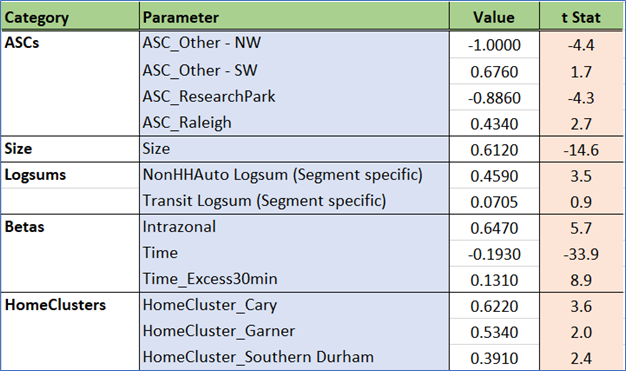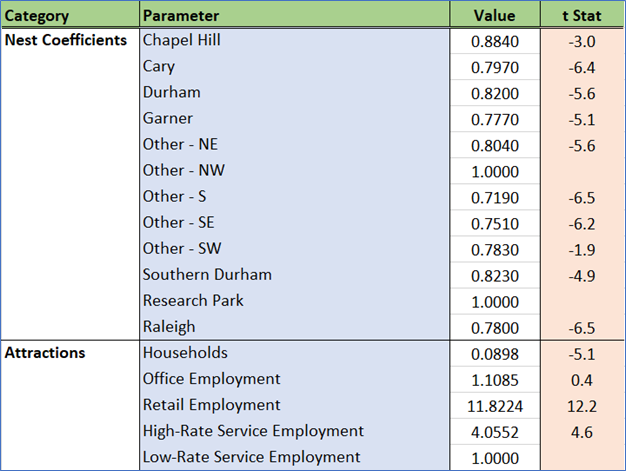
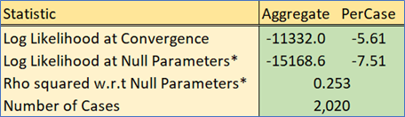
ASCs were estimated for all but one of the clusters, but only the significant ones were retained. These ASCs are very small in magnitude, confirming that the model’s explanatory power is derived from other variables and is sensitive to changes in model inputs.
The model has a sophisticated approach to travel time. Travel time is more important up to the first 30 minutes. Excess time beyond this threshold is gets a slight discount. This reflects a difference in the behavior for these longer trips, which are dominated more by what is at the destination rather than the time to get there.
Home cluster effects are strong for residents of Cary, Garner, Raleigh, Southern Durham and the southeastern periphery. People in these clusters often stop in the same cluster for their intermediate activities.
The public transit mode choice logsum is significant for certain segments like zero-vehicle households. Non-household auto logsums (primarily taxis and TNCs) are also significant.
The number of households is a major factor in the calculation of the size variable, reflecting the inclusion of personal visits in this trip purpose. Logically, the retail and service employment also help drive trips to specific destinations. Income-based stratification of employment did not make a difference in model performance.
Most cluster nest coefficients are significantly different from 1, so the nested structure is justified. As with W_HB_W, RTP is an exception to this.
W_HB_EK12
W_HB_EK12 corresponds to trips that are part of a work tour, have one end at home, and the other end at a school. This segment captures trips that directly connect the home to school on the way to or from work and translates to the HB School trip purpose in traditional models. It includes workers dropping off/picking up children on the way to/from work, and young workers who attend school.
Estimated coefficients and t statistics
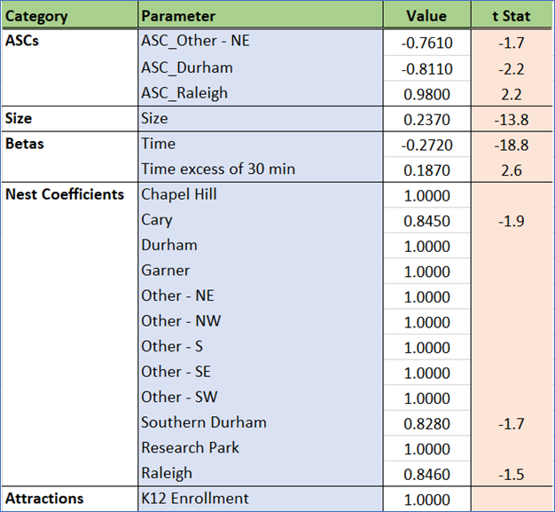
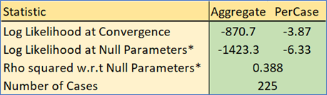
School location choice is driven by travel time and school enrollment. Some of the cluster nest coefficients are significantly different from 1, so the nested structure is justified for those clusters. The remaining zones are treated as top-level choices (MNL).
N_HB_OME
N_HB_OME corresponds to trips that are not part of a work tour, have one end at home, and the other end at an “other” activity that involved the spending of money. This segment is close to the HBO (Home-Based Other) trip purpose in traditional models.
Estimated coefficients and t statistics
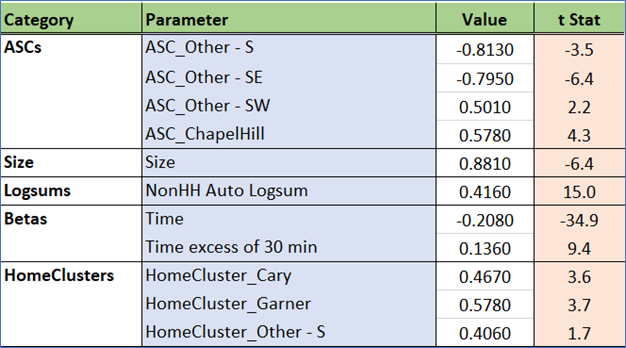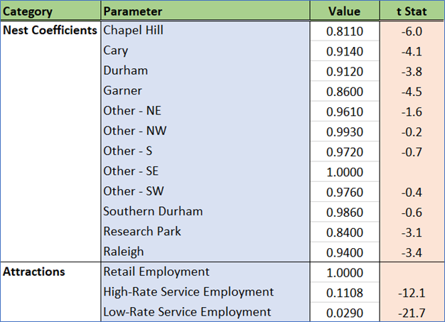
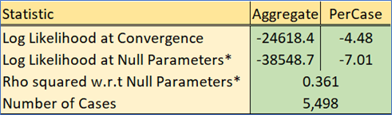
As with the previous models, cluster-based ASCs are small and only applied to a few clusters, which implies a model that is appropriately sensitive. Travel time is again more important up to the first 30 minutes. Excess time beyond this threshold is perceived as being less onerous.
Attractions are driven by retail and service employment, which is appropriate for shopping/maintenance trips.
N_HB_OMED
N_HB_OMed corresponds to trips that are not part of a work tour, have one end at home, and the other end at a medical-related activity. This segment would have been rolled into the HBO (Home-Based Other) trip purpose in traditional models.
Estimated coefficients and t statistics
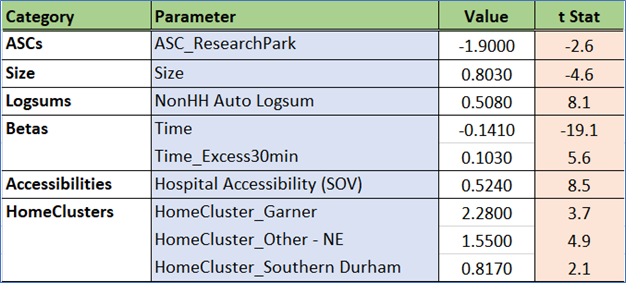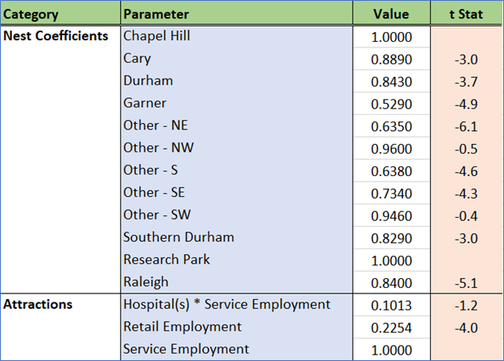
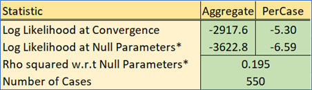
A zone’s accessibility to a hospital is a strong predictor in this model. This captures the important clustering of doctor’s offices, clinics, and pharmacies around major hospitals.
Travel time above 30 minutes has almost no impact on desintation choice. This is an encouraging result. People traveling long distances to see a specialist are not impacted by travel time in a major way.
Attractions are driven by retail and service employment, with an added boost from service employment related to the presence of hospitals.
N_HB_K12
N_HB_K12 corresponds to trips that are not part of a work tour, have one end at home, and the other end at a school. This segment would have been part of the HB School trip purpose in traditional models.
Estimated coefficients and t statistics
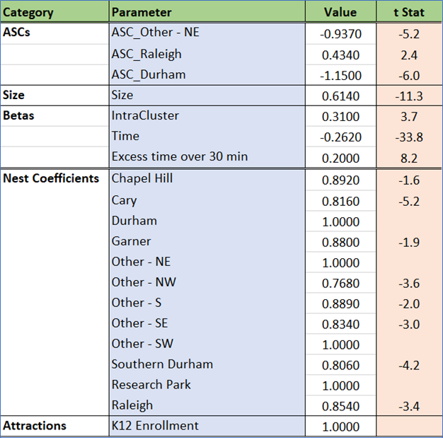
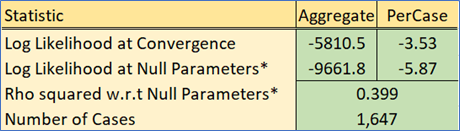
This model has a strong fit and is primarily based on K12 enrollment and travel time (as expected). Additionally, the negative coefficient on the Durham and Northeast clusters means that (all else equal) zones in that cluster are less likely to be chosen. The positive intrazonal coefficient is expected given the tendency for people to be assigned to schools near their home.
N_HB_OD_Long
N_HB_ODLong corresponds to trips that are not part of a work tour, have one end at home, and the other end at an “other” activity that is at least 30 minutes long. Visiting a friend is one example of this trip type. This segment would have been rolled into the HBO (Home-Based Other) trip purpose in traditional models.
Estimated coefficients and t statistics
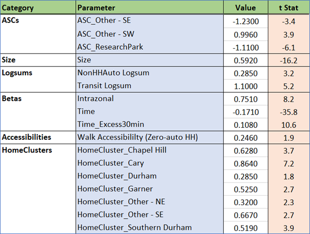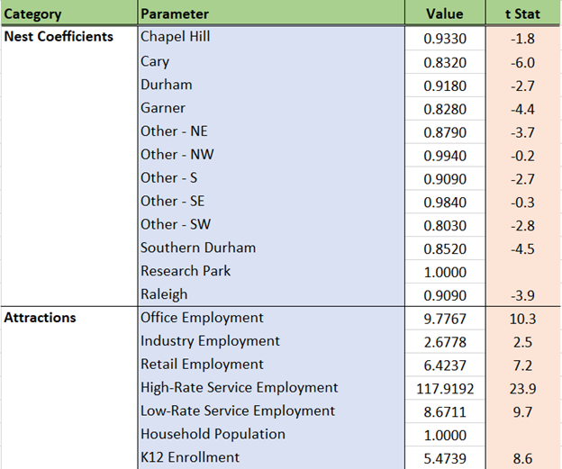
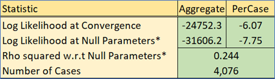
The penalty on travel time above 30 minutes is reduced as seen in multiple trip trypes. The positive coefficient on walk accessibility means that these trips are more attracted to zones in area that are more dense. Home cluster effects are strong, meaning that most of these trips stay within the home cluster. Employment, school enrollment, and residential population all are significant components of the size term. This reflects the catch-all nature of this trip type.
N_HB_OD_Short
N_HB_OD_Short corresponds to trips that are not part of a work tour, have one end at home, and the other end at an “other” activity shorter than 30 minutes in duration. This segment would have been rolled into the HBO (Home-Based Other) trip purpose in traditional models.
Estimated coefficients and t statistics
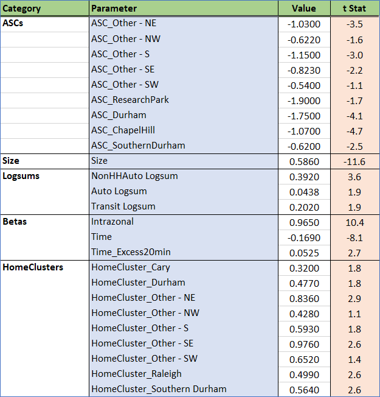
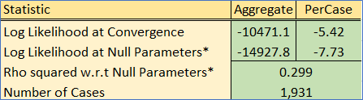
The attenuation on for drive time above 20 minutes is not as strong as other trip types. This indicates that these trips are likely just trying to reach the nearest attraction that satisfies the trip purpose. Similarly, home cluster effects and the intrazonal term are strong meaning that people stay nearby.
Logsums for household auto, non-household auto, and transit all play an important role in determining where someone travels. Similar to the N_HB_OD_Long trip, the size term is made up of employment, enrollment, and household population.
Non-Home-Based trips
The non-home-based trip purposes are multinomial logit (MNL) specifications. The cluster-based nesting structure did not improve model results and was not adopted for these purposes. Even so, the cluster-level alternative-specific constants (ASCs) are included to help capture cluster-level preferences.
The non-home-based trip purposes consist of:
- Work tours
- W_NH_EK12
- W_NH_O
- W_NH_WR
- Non-work tours
- N_NH_K12
- N_NH_OME
- N_NH_O
Recall that non-home-based trips are generated by mode based on the results of the home-based models. Given this, separate destination choice models have been estimated by mode. For simplicity and statistical efficiency of model estimation, the above trip purposes were combined into the following four categories that combine trip purpose with travel mode:
- NHB Work Tours by Auto
- NHB Non-work Tours by Auto
- NHB Tours by Public Transit
- NHB Tours by Bike/Walk
NHB Work Auto
This segment corresponds to trips that are part of a work tour, do not have either end at home, and are associated with the auto mode. This segment would have been rolled into the NHBW (Non-Home-Based Work) trip purpose in traditional models.
Estimated coefficients and t statistics
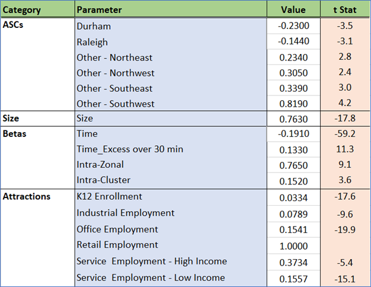
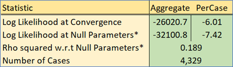
Drive time has the expected negative sensitivity, with times above 30 minutes penalized to a lesser extent than the first 30 minutes. The generic intra-cluster effect is strong, which is expected given shorter trip lengths of NHB trips. Attractions are driven by a variety of employment as well as school enrollment.
NHB NonWork Auto
This segment corresponds to trips that are part of a non-work tour, do not have either end at home, and use the auto mode. This segment would have been rolled into the NHBO (Non-Home-Based Other) trip purpose in traditional models.
Estimated coefficients and t statistics
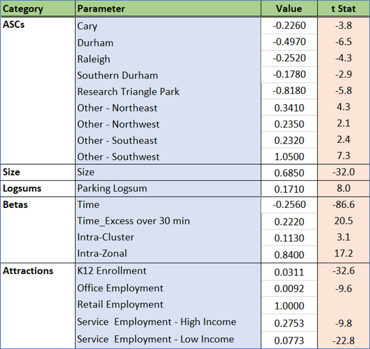
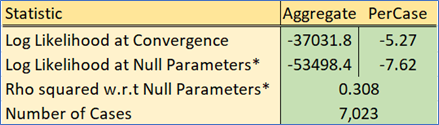
The non-work auto trip model looks similar to work, but the inclusion of parking logsums captures a major difference between the two trip types: work trips are not impacted by parking variables while non-work trips are.
NHB Transit
All NHB transit trips are handled with a single destination choice model.
Estimated coefficients and t statistics

Both the total time of the trip and the number of transfers are significant predictors in the attractiveness of destinations accessible by public transit modes. Transit accessibility of the destination also positively impacts destination choice, which matches expectations.
NHB NonMotorized
All NHB non-motorized trips are handled with a single destination choice model.
Estimated coefficients and t statistics
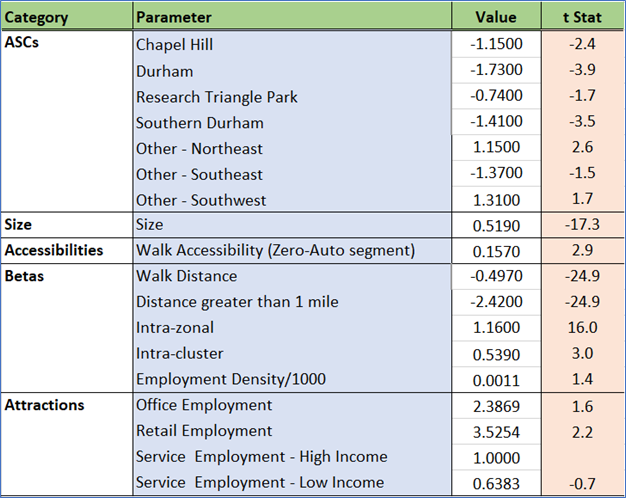
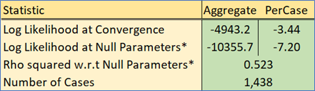
As expected, walk distance poses a highly significant deterrent to destinations that are farther away from the origin. An extra penalty is imposed on destinations that are more than a mile away. This captures the sharp drop off in trip lengths beyond one mile in the survey.
Intra-zonal and intra-cluster effects are strong, which also reflects the short-range nature of non-motorized trips. Finally, the walk accessibility of the destination is important for zero vehicle households. This captures an important reality: these households cannot use autos to make home-based trips.
DC Model Adjustments
During the model calibration stage, further updates to the DC models were performed to match the model cluster to cluster patterns to the weighted patterns from the survey. These adjustments can be thought of as the adjustment to the ASCs of a mode choice model to match aggregated shares.
Given the nested destination choice approach and the assumption behind the structure, the model lends itself very well to such post process adjustments. The following parameters were adjusted to try and match the survey patterns. It is worth mentioning that these post process adjustments turned out to be rather small, thereby inspiring additional confidence in the estimation results:
- Cluster ASC values: For a given purpose, the percent of trips attracted to each cluster can be determined (both from the model and the survey). The cluster ASC values can be adjusted to match the aggregated survey percentages. This additional adjustment for each cluster is the natural logarithm of the ratio of the target percentage to the model percentage.
- Intra-Cluster Constants: The model has provisions for intra cluster dummies. These dummies can likewise be adjusted to match the normalized intra-cluster totals from the survey.
- Intra-Zonal Dummy: Finally, the specific intra zonal dummy was adjusted for a few purposes to match the intra-zonal percentages.
While this model form has additional levers to control behavior, the adjustments made were small and do not meaningfully reduce model sensitivity.
DC Application
This section is a short note on the application of the destination choice models in the TRM model framework. In the TRM model, the destination choice is the higher-level choice which is then followed by the mode choice for a given purpose, market segment and period. However, the utility equation for the DC models contains mode choice logsums. Therefore, a three-step process is followed for each combination of purpose, segment and time period:
- The mode choice model is run for the given purpose, segment and time period, taking care to use the appropriate time period skim matrices. The output logsum matrix (by mode, segment and period) and the output mode choice probability matrix are stored.
- The DC nested choice is run, which produces a zone-zone probability matrix, such that for each row (zone), the destination probabilities sum to 1. The determination of this probability matrix itself is the result of the nested DC, implemented as a two-stage destination choice model with a zone level model and cluster level model informed by zone-zone DC logsums.
- The trip productions are applied to each row to produce a PA matrix, which are then further multiplied by the stored mode choice probabilities to produce PA matrices by mode, purpose, segment and period. The matrices are then combined as required.
References
- J. Newman (2021) “Larch: The Logit Architect.” URL: https://github.com/jpn--/larch, Accessed September 1, 2021.
Caliper Corporation, 2022